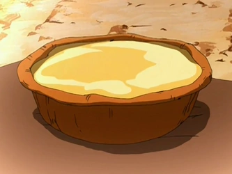

Egg Custard Tart

Golden baked pastry filled with delicious egg custard
This egg custard tart was smuggled through the Great Divide by the Zhang tribe. The egg custard tart or egg tart is a dessert widely coveted by Earth Kingdom citizens, and it was also popular and cooked among the Air Nomads.
Ingredients
- 1 (9 inch) unbaked pie crust
- 1 cup white sugar
- 1 cup milk
- ¼ cup butter, melted
- 2 tablespoons all-purpose flour
- 1 teaspoon vanilla extract
- ½ teaspoon ground nutmeg
- 3 large eggs
Instructions
- Preheat the oven to 400 degrees F (205 degrees C).
- Bake pie crust in the preheated oven until partially baked, about 5 minutes. Set aside.
- Adjust oven temperature to 325 degrees F (165 degrees C).
- Combine sugar, milk, melted butter, flour, vanilla, and nutmeg in a large bowl; mix well. Beat in eggs until well blended. Pour filling into partially baked pie shell.
- Bake in the preheated oven until a knife inserted in the center comes out clean, 45 to 55 minutes. Do not overbake.